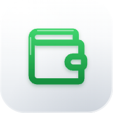

Expense TrackerPrivacy policy
Last updated 14 November 2026 · applies to the website, the Android app and the desktop apps.
Expense Tracker is an open-source personal finance app. It has no ads, does not sell or share your data, and uses it only to run the app for you.
What is stored, and where
- Your account — your email address and name from Google or email sign-in (Firebase Authentication).
- Your entries and settings — expenses, income, bills, budgets, goals, trips, debts and preferences, stored under your account in Google Cloud Firestore so they sync across your devices. Only you can read them; the database rules allow no one else.
- Your devices — a name like “Chrome on macOS”, when it was last open and whether it is locked, so you can see and sign out your devices.
- App lock — if you turn it on, a salted one-way hash of your PIN (never the PIN itself) and a log of security events such as repeated wrong PINs. Fingerprint and face unlock happen on your device; nothing biometric leaves it.
- Notifications — a push token per device and your upcoming reminders, so they can be delivered while the app is closed.
- Usage activity — your email and name, when your account was created, when you last opened the app and last added an entry, how many entries you have, how often you open it, and which app and version you use. The app’s maintainer can see this list (and nothing else) to understand who uses the app and improve it. It never includes amounts, what your entries are, or any other part of your data, and it is deleted when you delete your account.
Google Drive backup
If you turn on Drive backup, the app saves copies of your data to a folder named “Expense Tracker backups” in your own Google Drive. It asks only for the drive.file permission, which lets it see the files it creates and nothing else in your Drive. The app talks to Drive directly from your device; no copy of your backups or your Google access is kept on any server of ours. You can delete the backups from Google Drive at any time.
Expense Tracker’s use of information received from Google APIs adheres to the Google API Services User Data Policy, including the Limited Use requirements.
Auto-capture payments (Android app from Google Play)
This is off until you turn it on in Profile → Auto-capture payments. Before Android asks for either permission, the app shows a screen explaining exactly what will be read, why, and that it stays on your phone; nothing happens unless you choose “Agree and continue”. Each source then needs your permission in Android:
- Payment app notifications (Android “Notification access”): the app looks only at notifications from payment and banking apps — Google Pay, PhonePe, Paytm, BHIM, CRED, MobiKwik and the apps of major Indian banks. Notifications from every other app, including messaging apps such as WhatsApp and SMS apps, are ignored and never read or stored.
- Bank SMS (Android’s SMS permission,
RECEIVE_SMS): the app looks only at new messages from business senders (like “AD-HDFCBK”) that mention an amount. Messages from people (phone numbers) are ignored, and your SMS inbox is never read.
Messages that look like a completed payment are kept on your phone only, for up to 30 days, and shown on Home as “Add this payment?”. OTPs, requests and reminders are skipped. Nothing is uploaded or saved to your account unless you tap Add — then only the entry (amount, name, date), not the message. Turning the feature off deletes everything it kept. The app from the website does not include this feature.
Shared trips
A shared trip is a trip you create and invite friends to, so everyone can add what they spend and see who owes whom.
- What is stored — the trip’s name, dates and status; the people on it (the names the creator or each person typed); for each person who joined with an account, that account’s id, name and profile photo; and the trip’s rows (what was spent, the amount, who paid and who it was split between, the date) and settlements. It is stored in Google Cloud Firestore.
- Who can see it — only the accounts on that trip. Anyone you send the invite link to can see a short preview (the trip’s name, dates, the number of people and the creator’s name and photo) before joining. Nobody else can read a trip.
- Invite emails — if you type a friend’s email address to invite them, the app sends them one email with the link. The address is used only for that email and is not kept afterwards.
- Leaving and deleting — the creator can delete a trip at any time; this deletes it, its rows, settlements and the invite preview for everyone. When you delete your account, trips you created are deleted for everyone, and you are taken off trips you joined (your account, name and photo are removed). Rows you added to someone else’s trip stay there under the name used for you on that trip, so the other people’s balances still add up.
Invites
Your invite code is stored with your account id. If you make an account from a friend’s invite link, a record says which account invited yours and when you added your first entry — so your friend can get supporter days. Your friend sees only how many people joined, never who or anything about your money.
Bank statements
When you import a statement (History → import), the file is read on your device. It is never uploaded; only the entries you choose to add are saved to your account.
Emails
If app lock is on, you may get an email at your account address about security events on your account (for example, repeated wrong PINs). If a friend invites you to a shared trip, you get one email with the invite. There is no marketing email.
Services used
- Google Firebase (Authentication, Firestore, Cloud Messaging) — hosting your account and data.
- Exchange rates from public sources (jsDelivr / Cloudflare Pages and the European Central Bank via Frankfurter). These requests contain dates and currencies, never your data.
- GitHub Pages (the website) and GitHub Releases (app downloads).
Your choices
- Export everything as JSON or CSV at any time (Profile → Your data).
- Delete all your data, or your whole account, from Profile → Your data. Deleting your account removes your entries and settings, your devices and security records, your usage activity, shared trips you created, your place on trips you joined, your invite code and invite record, and anything waiting to be sent — then your sign-in. Deletion from the database is immediate. Backups in your Google Drive stay until you delete them. If you were a paid supporter, the payment record is kept as long as the law requires.
- Android backups — the Android app is excluded from Android’s cloud backup and phone-to-phone transfer, so nothing it keeps on your phone (including captured payment messages) is copied anywhere.
- Unused accounts. If you haven’t opened the app for 25 days or more, the app’s maintainer may contact you (by phone or email) and, with your agreement, close your account. Closing switches off sign-in and moves your data aside; it is kept for 90 days so it can be restored if you ask, and is then deleted for good. Nobody reads the kept data. Write to the address below to have it restored.
- Sign out any device from Profile → Security.
Contact
Questions or requests: kuntimaddithrishank@gmail.com. Source code: github.com/thrishankkuntimaddi/ExpenseTracker.